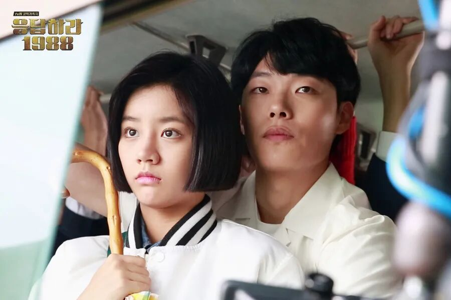
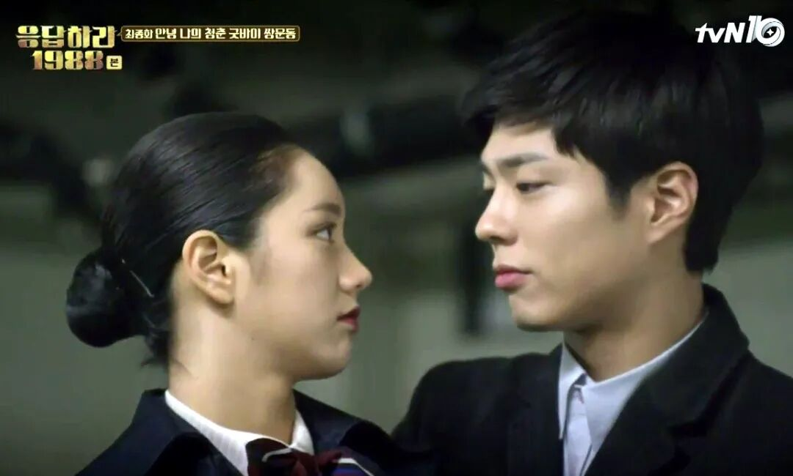
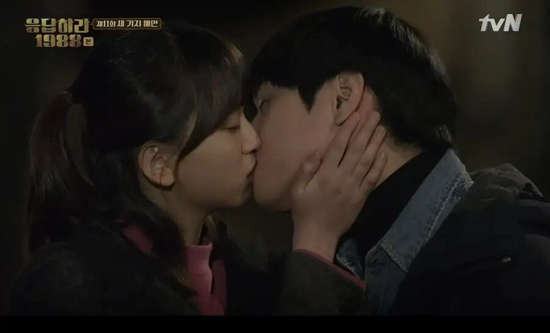
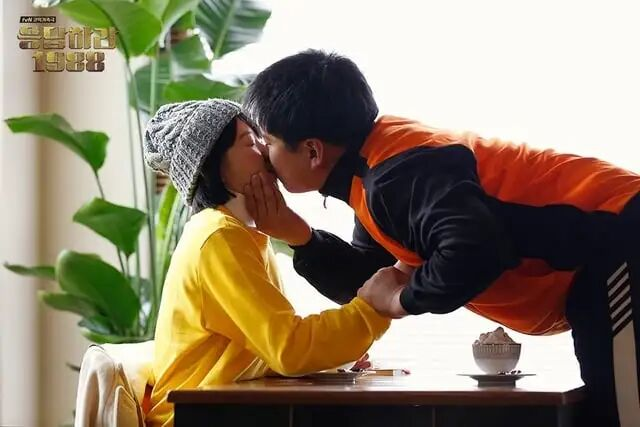

一份收不到的深情，跟没有有什么区别
欢迎点击上方名片关注我。您的支持是我坚持原创的最大动力。
四个老朋友围着一张小桌，酒喝到一半，笑声正热闹。
东龙又惦记上了正焕的毕业戒指，伸着手讨。这一回正焕没躲，他慢慢地拿出一个盒子放在桌子上，打开，推到德善面前，忽然收了笑：“德善，我有话对你说。”
他说，他每天在胡同口等一个多小时，就为了能和她一起去上学；她自习回来晚了，他就担心得睡不着；一天里，他想见她十几次。说到最后，他看着她，一字一句：“我是真的喜欢你，爱你。”
满桌人都屏住了呼吸。德善的眼圈红了。
然后正焕转过头，冲东龙骂了一句：“这下你满意了吧，混蛋？”
原来，这只是一句玩笑。
上面写的这个场景，熟悉的人一秒入戏，不熟的人一定没看过那部叫《请回答1988》的经典韩剧吧。
早就听说《请回答1988》这部剧的大名，但它一直躺在我的待看清单里睡觉。我曾经几次试图开始看，但总是第一集都看不完。不是说剧情不能一开始抓住我，只是这部戏确实是慢热，交代人物关系就花了几集（或者换个说法，是我搞清楚人物关系花了几集），没有耐心和整段的空闲时间的确难以坚持看下去。但和这部剧的广大粉丝一样，我要摸良心安利一句，你只要坚持了三集以上（且把人物关系基本搞清楚了），后面看到的都是光明。
从今年开始，我利用碎片时间一集集追，有时甚至一集分成两天三天看完，终于全部追完了。看完觉得意犹未尽，同时感慨：为什么这么好的剧只有一季？为什么不能把时间线再拉长一点，尤其是主角们的少年、青年线？拍个两三季才过瘾嘛。
回归正题。由于本片时间跨度大、情节多元、内容丰富，我不想又写成流水账式又臭又长的剧情介绍，而是想从剧里三对“小朋友”的感情线切入，聊聊我对这部经典韩剧感情戏的一些感受和看法。个人觉得这部剧最成功的原因之一就是每一段感情戏都写得无比细腻、感人、令人回味无穷。
回到开头。那个先温馨后扎心的场景来自第18集结尾处（因为看过这部剧的中国观众极多，我就不介绍前情和其他剧情了，没看过的朋友正好去补上不用担心我太多剧透）。看完这一幕，我差点起身掀桌子，忍不住对着正焕这小子连声“西八”。
正焕-德善这条感情线很长，几乎贯穿全剧，也是写得最虐的一段。我不明白编剧把青少年懵懵懂懂的初恋写得这么虐是个什么考虑？
正焕对德善的单恋是本剧最早开始描写的感情，他的每一个眼神，每一个动作，每一次行动都在传递着“我喜欢那个女孩”的信息。所以从一开始，我（我想其他观众也差不多）就一直盼着他向德善表白。结果他就这么一直拖着，暗地里爱得死去活来，明里却一脸嫌弃，让看的人干着急。

图：早班公交车上的正焕和德善
期间，他放弃了无数次表白的机会。后来，善宇向宝拉表白了。内向害羞的崔泽也间接向德善表白了（单独约德善看电影）。就连看上去最不成器的他哥正峰都敢伸开双臂拥抱曼玉了（崔德正三角线、善宇宝拉线和正峰曼玉线后面会讲）。正焕始终都是“我自岿然不动”。
好不容易熬到第18集，德善也从一个傻乎乎的小姑娘出落成一位落落大方的空姐了，又一个绝好的机会来到了正焕面前。疑似追求德善的一个男伴本来约她一起看演唱会，结果演唱会那天这小子放了德善鸽子。好面子的德善不愿在邻居伙伴面前丢脸，还是硬着头皮一个人去了演唱会，还故意穿得很少（表示有人接）。当然她的这点小把戏不久就被正焕和崔泽以不同方式识破。于是两位追求者几乎同时想到赶赴演唱会“英雄救美”。
结果，正焕迟了一步，被崔泽“截胡”。痛苦万分的正焕把自己的迟到归咎于一路遇到的好几个红绿灯。他在自己车里反思，一通内心独白令人既惋惜又心疼：所以，命运的另一个名字，是时机。然而命运也好，时机也好，都不是自己寻上门来的偶然。它是一个人怀着恳切的渴望，一次又一次做出选择，才创造出的奇迹般的瞬间。是毫不犹豫的舍弃，和毫不迟疑的决断，造就了时机。他比我更恳切，而我，本该更勇敢一些。错的不是红绿灯，也不是时机——是我那数不清的犹豫。
接下来就是开头那“精彩”的一幕。正当你以为这小子彻底醒悟了，他却以自己的愚蠢和自私终结了你（观众）的所有美好愿望。
看到这里，我对正焕的这段单恋基本有了定性，也得出一个爆论：他终归还是爱自己多过爱德善，换句话说，他没有自己想象的那样爱德善。
先别急着拿剧中贯穿时间最长的单恋情节来反驳我。我们来对比一下崔德正这个三角线另一端的崔泽的做法，就知道真正爱德善的是哪一个了。
崔泽在五个小伙伴中戏份不算多，但算是最早有出息而且有大出息的一位。剧中，他是在韩国围棋崛起的黄金期成长起来的一位天才少年棋手（从外形和性格看有点影射石佛李昌镐？）。单亲家庭长大的他，天真善良，性格内向但感情细腻。
他也很早就表现出对德善的喜欢。对比正焕一直以来“当面打压背地关心”的割裂态度，崔泽的表现就正常多了。虽然他天生害羞，不擅长表达，但面对喜欢的人时的那种真情流露非常让人动容。至少，他克服了害羞，多次向德善表达了好感，并主动提出约会。没有任何藏着掖着。即使后来敏感的他觉察到了正焕同样爱着德善，也没有当“滥好人”主动退出。每当机会出现，他都会毫不犹豫地抓住。可以说，他的每一点爱意，都实打实地被德善收到并感受到了。

图：崔泽和德善
反观正焕，除了第18集末那几句深情的表白（也许这里的确是用了情），没有什么是德善这些年来实际收到的。
站在德善的角度，作为家里总被忽略的老二，最渴望被明确选中、被肯定；她没有观众视角，只能凭对方让她确切感受到的东西做判断。一份永远收不到的深情，对她来说跟没有有什么区别——确定感本身就是最要紧、最真实的爱。
再来说说善宇和宝拉线。这一对的感情线没有崔德正那么长，戏份也没后者多，但虐度最低、甜度最高。这两位的性格也对味，都是那种敢爱敢恨，直来直去型的。
宝拉作为家中长女、名牌大学高材生，一直是小院小伙伴们仰视的明星。在自家弟弟妹妹面前更是神一般的存在。所以在最初几集她都是以非常强势的样子出镜，有时甚至有种“霸王龙”般不可直视的威严。
相比之下，单亲家庭出身的善宇就显得普通多了。妈妈辛苦把他和年幼的妹妹拉扯大，善宇也很懂事，努力上进，品学兼优。同时没忘了心疼妈妈，照顾妹妹。如果不是因为碰巧在一个院子里长大，估计他和宝拉不会有什么交集。
但不知从什么时候开始，他就喜欢上了同院长大的威严学姐宝拉。善宇是阳光大男孩，更不会藏着掖着，早早就向宝拉表白了。宝拉刚开始对善宇嗤之以鼻，觉得就一小破孩儿，也敢来追姐？
后来宝拉被喜欢的大学学长甩了，这才迎来转折点。善宇抓住机会各种献殷勤，终于俘获宝拉的芳心。
这两人的故事其实放在现实中太普通不过，郎才女貌（剧中两人其实才貌相当，两人颜值都相当高，智商也能基本打平手——宝拉名牌大学高材生，善宇后来当上医生），日久生情，两情相悦，走到一起毫无悬念。
当然他们后来的分手也是外部环境所致，并非他们本愿。好在最后他们还是走到了一起，本来嘛，他们的感情是没有问题的。

图：善宇和宝拉
最后讲讲正峰和曼玉这条线。正峰这孩子本性纯良，作为家中长子，自然是被寄予厚望。但他表现得远不如宝拉那般“上进”。剧中早期他没什么戏份，其他孩子玩在一起的时候，他老是宅在自己房间里折腾自己的一些小爱好。父母对他也没办法，只是叹气。
直到偶遇曼玉，正峰整个人像活过来了似的，豁然开朗。他也似乎找到了生活的目标。从此对曼玉朝思暮想。好在这段感情从一开始就不是单恋，曼玉对他也是情意绵绵。
后来他们的关系被曼玉爸爸发现。曼玉爸爸望女成凤，不希望女儿这么早恋爱。于是送曼玉出国留学。热恋中的两人就此分开，痛苦不已。
与宝拉善宇线一样，只要感情是真的，而且感情一直在，相爱的人总会有重逢的一天。果然，后来曼玉回国，出落得愈发漂亮，两人再续前缘。

图：正峰和曼玉
讲完这三段感情戏，再回到开头，我们会发现，跨越时间最长也是最虐的那条正德单恋线反而是最不正常的。
由于戏份多，曝光机会也多，正焕本来在观众视角是最有优势的。也就是说观众很容易代入正焕的角色，会下意识地共情他内心的纠结、矛盾，甚至为他前面在感情上的一些隐忍、退避找理由。但是那句老话怎么说来着？“全靠同行衬托”。看看同一个院子、同一个环境下长大的善宇、崔泽，还有自己的亲哥哥正峰，人家是怎么对待感情的？一个字，真。主打一个爱就爱了，管它去呢。而正焕呢，从头到尾都以自己为中心，像一个商人一般算计面子和感情在天平上的重量。最后还是自己的面子占了上风，所以才出现了本文开头的荒唐一幕。
说实话，作为观众，在前17集，甚至到18集最后那一幕之前，我还是希望正焕和德善最终能成为一对的，一直也在盼望着奇迹的出现。如果我是编剧，我会毫不犹豫地改掉18集的结尾，让正焕和德善在小伙伴的欢呼声中拥在一起。
但编剧偏不这么写，现实毕竟不童话。但其实18集过后，我的心态马上就平静了。因为我认识到，崔泽才是真正值得德善的那个人。只有一个人把你的重要性放在他自己之上时，那他才是真的爱你，也会是更有可能给你幸福的那个人。而故事最后的走向，也和这个判断一致：德善嫁给了阿泽；正焕再见到他们时，只是笑着送上祝福——那场玩笑里没说出口的真话，他到底还是没能说出口。